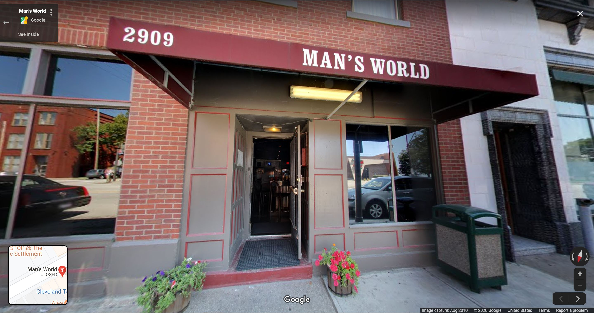
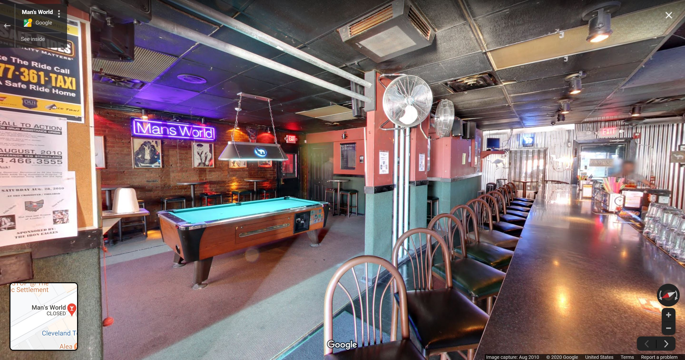

Oral History by Brandon Sitler Zelmer
-
On gay nightlife, support systems, and the strength of
community
Brandon Sitler Zelmer formerly worked as a bartender for Man's World (a three-bar complex located in the Striebinger Block Building between 1995-2003). Throughout his time in Cleveland, he's been actively involved in Cleveland's LGBTQ+ Sports League, Stonewall Sports. Today, him and his husband co-own The Urban Orchid, a floral boutique located in Hingetown, Tremont, and Little Italy.
LEILA: What were the sports leagues like?
BRANDON: The sports leagues were a lot of fun. They had softball, they had volleyball, and it turned into—you know, you say safe haven and community and a place to be yourself. That’s really what these places were like. You would join the softball team and everybody instantly becomes your best friend. You’d go to their house for Thanksgiving and Christmas and Easter and Fourth of July parties. They would do softball tournaments and all the money would go towards the gay homeless shelter, gay youth centers, gay hospice… they really did a lot for our community as far as outreach went.
I grew up in Claridon, Ohio. When I was growing up, I knew I was gay from a very young age but I didn’t know anybody else that was gay in my area. When I came out of the closet I instantly lost every single one of my friends, all my family stopped talking to me because they thought—you know that’s when everything happened with Matthew Shephard and AIDS was still at a high—so people thought even if they shook my hand they were going to catch AIDS. And I had a friend’s mom tell my friend that I wasn’t allowed at the house anymore, because they were afraid that they’d all catch AIDS if I used their bathroom. I moved away, from Claridon to Florida, because I didn’t feel safe in the small town that I was at. But even in Florida I tended to stay closeted because of my experience in Geauga County. I was only out there for about two years before I moved back to Cleveland.
-
The Bar Scene
BRANDON: When I moved back to Cleveland, I went on the M4M chatline, like “I’m 21 years old, I’m new to Cleveland, I don’t know anybody gay, will someone please take me to a bar?” [Laughs] and this guy Josh answered the ad. I met him at The Cage, and he was my first friend in Cleveland. It was eye-opening, you go to this bar where everyone is comfortable with themselves, music is blaring, people are wearing whatever they want, just being free and having a good time. I remember when you’d go up to The Cage, all the windows were blacked out so you couldn’t tell that it was a bar. It was in a nondescript, brick, single-story building with a shopping center, and you just walked in and it was awesome. It was all black inside with a disco ball and laser lights and the music blaring. That’s where I really met my first large group of friends, hanging out at The Cage every night.
-

Exterior of A Man's World. (Source: 2010 Google Maps)

Interior View. (Source: 2010 Google Maps)
My first gay bar that I worked at in Cleveland was actually Interbelt, then from Interbelt to Twist, Twist to Deco, and then Deco to Man’s world. And Man’s World was crazy. Man’s World was actually three bars in one… so it was Man’s World, Crossover, and Toolshed. When you first walked in, it was Toolshed. And then you’d walk through the hallway and that was supposed to be Crossover because you’d cross over the hallway, then when you go downstairs you’re in Man’s World. At the time Man’s World was really only supposed to be for leather men. Even if you were in jeans or a button up and tennis shoes you couldn’t be down there. You had to be wearing some kind of leather or you had to be shirtless. They lightened those rules up later on, but they tried to keep it a little bit more private for the leather-type guys down there. And then the crossover was supposed to be more like a bear version of a sports bar, it had the pool table in there, and then the toolshed was kinda more like, I don’t know if it was supposed to be country/western theme but they had country line dance nights there, things like that. It was a fun place to be, it was definitely a lot of crazy nights [laughs] and a lot of insane stuff going on. But that was one of my favorite places to work just because everybody that went there was so unique, all the clientele that hung out, everyone had their own story. I got to meet a lot of cool people working at that job.
-
Planting Roots
BRANDON: My husband and I started The Urban Orchid ten years ago. He kept his full-time job while I started the business, then about five years in he left his full-time job to help expand it. I met Jeff the day I moved to Cleveland. I moved in with my roommate, Nick, and he’s like ‘let’s go out and celebrate your move.’ So we go to Bounce, it was Halloween night, and I see Jeff and I turn to Nick like ‘Oooh that guy’s really cute.’ He introduced me and we’ve been together pretty much since [laughs].
LEILA: I love that.
BRANDON: It’s crazy, I actually moved to Cleveland thinking I was only going to live here for a couple months then move out. Just try to get my bearings back and figure out what I want to do with the next stage of my life. But when I moved here, I went to the gay bars every night and made such a cool group of friends and such a tight community that I didn’t want to leave. I think when you don’t have a community around you it’s easy to feel like you’re blowing in the wind… You don’t really have a plan or a goal or a focus. When I moved here and I met all these people, I was inspired by all these people. At that point I’m a 21 year old kid looking to get drunk every night, but then I meet these people working for the LGBT Center, working for the Center for Family Solutions, working for the food bank, working for Pride. And then you want to be a part of that. It made me want to set roots, it made me want to join a softball team or a volleyball team or work at the LGBT Center and do events at Pride. And when I started doing that, I started to think further about what I wanted to do for the rest of my life. I had no floral background, but somebody that I met at a bar worked at a flower shop and told me it’s something I’d probably be good at. I applied for the job, got the job, and started working as a designer at the shop. It wasn’t something I planned but I fell in love with that. And none of that would happen if I didn’t move to Cleveland, if I didn’t work at the bar, if I didn’t meet the florist, and if I didn’t meet Jeff. I wouldn’t be a florist right now. I wouldn’t own Urban Orchid. So it really set a course for my life the way it was trajected.
When we started with Urban Orchid, I had the whole community’s support around me as well. When we opened the stores, everybody I’ve ever met at a bar or LGBTQ softball tournament, they were my customers, they were coming there because they knew me and wanted to support me, not necessarily because they needed flowers [laughs]. And even now, ten years later, I am constantly getting recommendations from people that I haven’t seen in like fifteen years. Like ‘my friend Jay knew you from Twist or knew you from Man’s World and said I should talk to you.’ That constant support from the community in this area is insane, and it’s beautiful.
-
The state of gay bars—or lack thereof—in Cleveland today
BRANDON: Since we’re more comfortable being out in the open, we’re going to every bar now. Gay bars weren’t making the money to sustain themselves because there wasn’t necessarily a large group going to those bars anymore, because we were going everywhere. Those bigger bars like Bounce couldn’t really support themselves. So the reason the bars were shutting down was because we felt safer going out to every bar. But that is a good thing. It’s a good thing that gay people feel comfortable going out in public to whatever space that we want, that we feel safe and accepted. There is always going to need for a safe space because not everyone’s always gonna feel safe. There’s always gonna be need for a gay bar. I don’t personally think I could go to straight-only bars at all times. But I know I can go out with my friends and not get made fun of, teased, beat up, and that wasn’t always the case.
LEILA: I’m a youngin' in this conversation, I was born in ’93. So in a lot of ways I think I take the generation before mine’s experience for granted.
BRANDON: And I feel that same way above the generation above me, because I was able to come out at 18 when a lot of those people didn’t come out until they were like 40 or 50. And before that people didn’t come out at all. So every generation is one step closer to being the best that it can be. I don’t know if it will ever be awesome, but we’re trying.
• • •